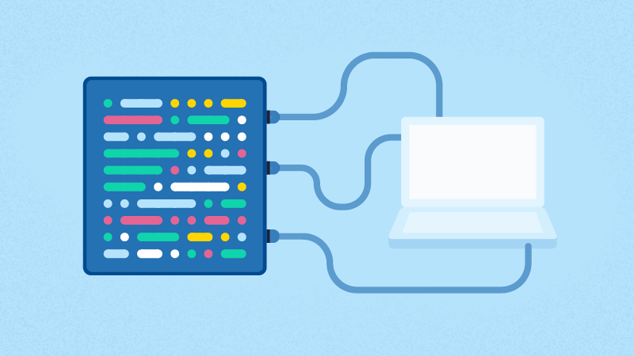

Introducción al Proyecto
En la primera parte de nuestro proyecto, llevamos a cabo un análisis exploratorio de datos (EDA) enfocado en BiciMAD, el sistema de bicicletas eléctricas compartidas de Madrid. Este análisis es esencial para mejorar y optimizar el servicio de BiciMAD utilizando aprendizaje automático. El EDA nos ayuda a comprender los patrones de uso, las preferencias de los usuarios y las áreas de mejora potencial antes de implementar soluciones basadas en aprendizaje automático.
Recopilación y Procesamiento de Datos
El análisis de BiciMAD comienza con la recopilación de datos clave, como los viajes realizados, su duración, las ubicaciones de las estaciones, la disponibilidad de bicicletas y los patrones de demanda. Estos datos se someten a un proceso de limpieza y preparación que implica eliminar registros atípicos, manejar la información faltante y normalizar las características para facilitar análisis posteriore.
Análisis Exploratorio de Datos (EDA)
El EDA aplicado a BiciMAD involucra técnicas estadísticas y de visualización para desentrañar las dinámicas del servicio de bicicletas compartidas. Se analizan las distribuciones de la duración de los viajes, horas pico de uso, estaciones más y menos concurridas, relación entre la disponibilidad de bicicletas, demanda y frecuencia de uso en diferentes zonas, así como cualquier patrón estacional o anomalías en los datos.
Dashboard de Resultados
Con el objetivo de mejorar la experiencia del usuarioTras el EDA hemos realizado el siguiente Dashboard interactivo dónde podéis haceros una idea de las posibilidades que nos dan los datos 👇

Conclusiones
Basándonos en el desarrollo y análisis del proyecto de Machine Learning, podemos llegar a las siguientes conclusiones:
- Conclusión 1
- Conclusión 2
- Conclusión 3